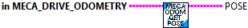
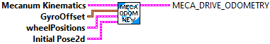

Returns the kinematics data cluster for this odometry
Parameters:
- MecaDriveOdometry - Data structure
Returns:
Mecanum Kinematics - The kinematics data cluster

Returns the position of the robot on the field.
Parameters:
- MecaDriveOdometry - Data structure
Returns:
Pose - The pose of the robot (x and y are in meters).

Constructs a MecanumDriveOdometry cluster data structure
SubVIs for mecanum drive odometry. Odometry allows you to track the robot's position on the field over a course of a match using readings from your mecanum wheel encoders.
Teams can use odometry during the autonomous period for complex tasks like path following. Furthermore, odometry can be used for latency compensation when using computer-vision systems.
Parameters:
- Mecanum Kinematics -- The mechanum kinematics data cluster for this drive
- GyroOffset - The angle reported by the gyroscope. (Rotation)
- wheelPositions -- The distances driven by each wheel.
- initialPose - The starting position of the robot on the field. (Pose - Meters)
Returns:
- MecaDriveOdomentry - Data structure

Constructs a MecanumDriveOdometry cluster data structure with a default pose at the origin.
SubVIs for mecanum drive odometry. Odometry allows you to track the robot's position on the field over a course of a match using readings from your mecanum wheel encoders.
Teams can use odometry during the autonomous period for complex tasks like path following. Furthermore, odometry can be used for latency compensation when using computer-vision systems.
Parameters:
- MecanumKinematics -- Mecanum Kinematics data cluster
- GyroOffset - The angle reported by the gyroscope. (Rotation)
- wheelPositions -- The distances driven by each wheel.
Returns:
- MecaDriveOdomentry - Data structure

Resets the robot's position on the field.
The gyroscope angle does not need to be reset here on the user's robot code. The library automatically takes care of offsetting the gyro angle.
Parameters
- MecaDriveOdometry - Data structure
- gyroOffset - The angle reported by the gyroscope.
- wheelPositions -- The distances driven by each wheel.
- pose - The position on the field that your robot is at. (Meters)
Returns:
- MecaDriveOdometry - Updated ata structure

Updates the robot's position on the field using forward kinematics and integration of the pose over time. This method takes in an angle parameter which is used instead of the angular rate that is calculated from forward kinematics, in addition to the current distance measurement at each wheel.
Parameters:
- MecaDriveOdometry - Data structure
- gyroAngle - The angle reported by the gyroscope.
- wheelPositions - The distances driven by each wheel..
Returns:
- MecaDriveOdometry - Updated data structure
- Pose - The new pose of the robot.